산업위생관리산업기사 (2015-08-16 기출문제)
1과목: 산업위생학 개론
1. 1900년대 초 진동공구에 의한 수지의 Raynaud 증상을 보고한 사람은?
- Rehn
- Raynaud
- Loriga
- Rudolf Virchow
(정답률: 60%)

2. 다음 중 직업성 난청(영구성 청력 장해)에 대하여 가장 올바르게 설명한 것은?
- 고막 이상의 병변이 있다.
- 청력손실이 생기면 회복될 수 있다.
- Corti기관에는 영향이 없고, 청신경에만 이상이 있다.
- 전음계(傳音系)가 아니라 감음계(感音系)의 장애를 말한다.
(정답률: 62%)
3. 무게 8kg 물건을 근로자가 들어 올리는 작업을 하려고 한다. 해당 작업조건의 권장무게 한계(RWL)가 5kg이고, 이동거리가 20cm일 떄에 들기지수(Lifting Index, LI)는 얼마인가? (단, 근로자는 10분 2회씩 1일 8시간 작업한다.)
- 1.2
- 1.6
- 3.2
- 4.0
(정답률: 71%)
4. 실내공기 오염물질 중 이산화탄소(CO2)에 대한 설명과 가장 거리가 먼 것은?
- 일반적으로 실내오염의 주요지표로 사용된다.
- 쾌적한 사무실 공기를 유지하기 위해 이산화탄소는 1000ppm 이하로 관리한다.
- 물질의 연소과정에서 산소의 공급이 부족할 경우 불완전 연소에 의해 발생된다.
- 이산화탄소의 증가는 산소의 부족을 초래하기 때문에 주요 실내오염물질의 하나로 다루어 진다.
(정답률: 60%)
5. 다음 중 인간공학적 방법에 의한 작업장 설계시 정상작업영역의 범위로 가장 적절한 것은?
- 서 있는 자세에서 팔과 다리를 뻗어 닿는 범위
- 서 있는 자세에서 물건을 잡을 수 있는 최대 범위
- 앉은 자세에서 위팔과 아래팔을 곧게 뻗쳐서 닿는 범위
- 앉은 자세에서 위팔은 몸에 붙이고, 아래팔만 곧게 뻗어 닿는 범위
(정답률: 68%)
6. 산업안전보건법령상 건강진단 기관이 건강진단을 실시 하였을 때에는 그 결과를 고용노동부장관이 정하는 건강진단개인표에 기록하고, 건강진단 실시일부터 며칠 이내에 근로자에게 송부하여야 하는가?
- 15일
- 30일
- 45일
- 60일
(정답률: 84%)
7. 다음 중 바람직한 교대제 근무에 관한 내용으로 가장 거리가 먼 것은?
- 야간근무의 교대시간은 심야를 피해야 한다.
- 야간근무 종류 후 휴식은 48시간 이상으로 한다.
- 교대 방식은 낮근무, 저녁근무, 밤근무 순으로 한다.
- 야간근무는 신체의 적응을 위하여 최소 3일이상 연속하여야 한다.
(정답률: 87%)
8. 다음 중 피로의 증상으로 틀린 것은?
- 혈압은 초기에는 높아지나 피로가 진행되면 오히려 낮아진다.
- 소변의 양이 줄고, 소변 내의 단백질 또는 교질물질의 농도가 떨어진다.
- 혈당치가 낮아지고 젖산과 탄산량이 증가하여 산혈증으로 된다.
- 체온은 높아지나 피로정도가 심해지면 오히려 낮아진다.
(정답률: 58%)
9. 다음 중 산업위생관리의 목적에 대한 설명과 가장 거리가 먼 것은?
- 작업자의 건강보호 및 생산성의 향상
- 작업환경 개선 및 직업병의 근원적 예방
- 직업성 질병 및 재해성 질병의 판정과 보상
- 작업환경 및 작업조건의 안간공학적 개선
(정답률: 78%)
10. 다음 중 “심한 전신피로 상태”로 판단할 수 있는 경우는?
- HR30-60이 100을 초과하고 HR150-180과 HR30-90 차이가 15 미만인 경우
- HR30-60이 110을 초과하고 HR150-180과 HR30-90 차이가 10 미만인 경우
- HR30-60이 100을 초과하고 HR150-180과 HR30-90 차이가 10 미만인 경우
- HR30-60이 120을 초과하고 HR150-180과 HR30-90 차이가 15 미만인 경우
(정답률: 63%)
11. 근육운동에 필요한 에너지는 혐기성 대사와 호기성 대사를 통해 생성된다. 다음 중 혐기성과 호기성 대사에 모두 에너지원으로 작용하는 것은?
- 지방(fat)
- 단백질(protein)
- 포도당(glucose)
- 아데노신삼인산(ATP)
(정답률: 72%)
12. 작업자가 유해물질에 어느 정도 노출되었는지를 파악하는 지표로서 작업자의 생체시료에서 대사산물 등을 측정하여 유해물질의 노출량을 추정하는 데 사용되는 것은?
- BEI
- TLV-TWA
- TLV-S
- Excursion limit
(정답률: 70%)
13. 다음 중 근골격계 질환에 관한 설명으로 틀린 것은?
- 부자연스러운 자세를 피한다.
- 작업시 과도한 함을 주지 않는다.
- 연속적이고 반복적인 동작일 경우 발생률이 높다.
- 수공구의 손잡이와 같은 경우에는 접촉 면적을 최대한 적게 하여 예방한다.
(정답률: 89%)
14. 다음중 국제노동기구(ILO)와 세계보건기구(WHO) 공동위원회에서 제시한 산업보건의 정의에 포함되지 않는 사항은?
- 근로자의 생산성을 향상시킨다.
- 건강에 유해한 취업을 방지한다.
- 근로자의 건강을 고도로 유지 증진시킨다.
- 근로자가 심리적으로 적합한 직무에 종사하게 한다.
(정답률: 65%)
15. 다음 중 산업안전보건법령상 보건관리자의 직무에 해당하지 않는 것은? (단, 기타 작업관리 및 작업환경관리에 관한 사항은 제외한다.)
- 사업장 순회점검ㆍ지도 및 조치의 건의
- 위험성 평가에 관한 보좌 및 조언ㆍ지도
- 물질안전보건자료의 게시 또는 비치에 관한 보좌 및 조언ㆍ지도
- 산업안전보건관리비의 집행 감독 및 그 사용에 과한 수급인 간의 협의ㆍ조정
(정답률: 84%)
16. 다음 중 산업위생통계에 있어 대푯값에 해당하지 않는 것은?
- 표준편차
- 산술평균
- 가중평균
- 중앙값
(정답률: 52%)
17. 1일 10시간 작업할 때 전신 중독을 일으키는 methyl chloroform(노출기준 350ppm)의 노출기준을 얼마로 하여야 하는가? (단, Brief와 Scala의 보정 방법을 적용한다.)
- 200ppm
- 245ppm
- 280ppm
- 320ppm
(정답률: 58%)
18. 다음 중 하인리히가 제시한 산업재해의 구성비율을 올바르게 나타낸 것은? (단, 순서는 “사망 또는 증상해 : 경상 : 무상해 사고”이다.)
- 1:29:300
- 1:30:330
- 1:29:600
- 1:30:600
(정답률: 83%)
19. 다음 중 사업장에서 부적응의 결과로 나타나는 현상을 모두 나타낸 것은?
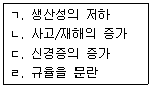
- ㄱ, ㄴ, ㄷ
- ㄱ, ㄷ, ㄹ
- ㄴ, ㄷ, ㄹ
- ㄱ, ㄴ, ㄷ, ㄹ
(정답률: 81%)
20. 기초대사량이 75kcal/hr이고, 작업대사량이 225kcal/hr인 작업을 수행할 때, 작업의 실동률은 약 얼마 인가? (단, 사이또와 오지마의 경험식을 적용한다.)
- 50%
- 60%
- 70%
- 80%
(정답률: 74%)
2과목: 작업환경측정 및 평가
21. 다음 중 실리카겔과의 친화력이 가장 큰 유기용제는?
- 방향족 탄화수소류
- 케톤류
- 에스테르류
- 파라핀류
(정답률: 72%)
22. 작업환경 측정의 목표에 관한 설명 중 틀린 것은?
- 근로자의 유해인자 노출 파악
- 환기시설 성능평가
- 정보 노출기준과 비교
- 호흡용 보호구 지급 결정
(정답률: 64%)
23. 검지관의 장점에 대한 설명으로 틀린 것은?
- 사용이 간편하다.
- 특이도가 높다.
- 반응시간이 빠르다.
- 숙련된 산업위생전문가가 아니더라도 어느 정도 숙지하면 사용할 수 있다.
(정답률: 85%)
24. 시료 채취방법 중에서 개인시료 채취시의 채취지점으로 가장 알맞은 것은? (단, 개인시료채취기 이용)
- 근로자의 호흡위치(호흡기중심 반경 30cm인 반구)
- 근로자의 호흡위치(호흡기중심 반경 60cm인 반구)
- 근로자의 호흡위치(1.2~1.5m 높이의 고정된 위치)
- 근로자의 호흡위치(측정하고자 하는 고정된 위치)
(정답률: 84%)
25. ( )안에 옳은 내용은?
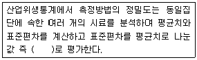
- 분산수
- 기하평균치
- 변이계수
- 표준오차
(정답률: 74%)
26. 8시간 작업하는 근로자가 200ppm 농도에 1시간, 100ppm 농도에 2시간, 50ppm의 3시간 동안 TCE에 노출되었다. 이 근로자의 8시간 TWA 농도는?
- 35.7ppm
- 68.7ppm
- 91.7ppm
- 116.7ppm
(정답률: 56%)
27. 복사열 측정시 사용하는 기기명은?
- Kata 온도계
- 열선풍속계
- 수은 온도계
- 흑구 온도계
(정답률: 34%)
28. 어느 작업장의 벤젠농도를 5회 측정한 결과가 30, 33, 29, 27, 31 ppm이었다면 기하평균 농도(ppm) 는?
- 29.9
- 30.5
- 30.9
- 31.1
(정답률: 70%)
29. 공기(10L)로부터 벤젠(분자량=78)을 고체흡착관에 채취하였다. 시료를 분석한 결과 벤젠의 양은 5mg 이고 탈착효율은 95%였다. 공기 중 벤젠 농도는? (단, 25℃, 1기압 기준)
- 약 1⑤ppm
- 약 125ppm
- 약 145ppm
- 약 165ppm
(정답률: 38%)
30. 흡광광도법에서 세기 lo의 단색광이 시료액을 통과하여 그 광의 50%가 흡수 되었을 때 흡광도는?
- 0.6
- 0.5
- 0.4
- 0.3
(정답률: 78%)
31. 불꽃방식의 원자흡광광도계의 일반적인 장단점으로 옳지 않은 것은?
- 가격이 흑연로장치에 비하여 저렴하다.
- 분석시간이 흑연로 장치에 비하여 길게 소요된다.
- 시료량이 많이 소요되며 감도가 낮다.
- 고체시료의 경우 전처리에 의하여 매트릭스를 제거하여야 한다.
(정답률: 53%)
32. 50% 헵탄, 30% 메틸렌클로라이드, 20% 퍼클로로에틸렌의 중량비로 조성된 용제가 중발되어 작업환경을 오염시키고 있다. 순서에 따라 각각의 TLV는 1600mg/m3(1mg/m3=0.25ppm) 720mg/m3(1mg/m3=0.28ppm), 670mg/m3(1mg/m3=0.15ppm)이다. 이 작업장의 혼합물의 허용농도(mg/m3)는? (단, 상가 작용 기준)
- 약633
- 약 743
- 약 853
- 약 973
(정답률: 62%)
33. 토석, 암석 및 광물성 분진(석면분진제외) 중의 유리규산(SIO2)함유율을 분석하는 방법?
- 불꽃광전자 검출기 (FPD)법
- 계수법
- X-선 회절 분석법
- 위상차 현미경법
(정답률: 43%)
34. 다음은 작업장 소음 측정시간 및 횟수 기준에 관한 내용이다. ( )안에 내용으로 옳은 것은? (단, 고용노동부 고시 기준)
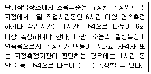
- 2회 이상
- 3회 이상
- 4회 이상
- 5회 이상
(정답률: 64%)
35. 지역시료채취의 용어 정의로 가장 옳은 것은? (단, 고용노동부 고시 기준)
- 시료채취기를 이용하여 가스, 중기, 분진, 흄, 미스트 등을 근로자의 작업위치에서 호흡기 높이로 이동하여 채취하는 것을 말한다.
- 시료채취기를 이용하여 가스, 증기, 분진, 흄, 미스트 등을 근로자의 작업행동 범위에서 호흡기 높이로 이동하여 채취하는 것을 말한다.
- 시료채취기를 이용하여 가스, 증기, 분진, 흄, 미스트 등을 근로자의 작업위치에서 호흡기 높이에 고정하여 채취하는 것을 말한다.
- 시료채취기를 이용하여 가스, 증기, 분진, 흄, 미스트 등을 근로자의 작업행동 범위에서 호흡기 높이에 고정하여 채취하는 것을 말한다.
(정답률: 52%)
36. 다음 중 표준기구에 관한 내용이다. ( ) 안에 옳은 내용은?
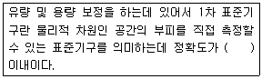
- ± 1%
- ± 3%
- ± 5%
- ± 10%
(정답률: 54%)
37. 작업환경측정 분석 시 발생하는 계통오차의 원인과 가장 거리가 먼 것은?
- 불안정한 기기반응
- 부적절한 표준액의 제조
- 시약의 오염
- 분석물질의 낮은 회수율
(정답률: 43%)
38. TLV(Threshold Limit Values)는 ACGIH에서 권장하는 작업장의 노출농도기준으로써 세계적으로 인정받고 있다. TLV에 관한 설명으로 틀린 것은?
- 대기오염의 평가 및 관리에 적용하지 않는다.
- 기존의 질병이나 육체적 조건을 판단하기 위한 척도로 사용될 수 없으며 안전과 위험농도를 구분하는 경계선이 아니다.
- 근로자가 주기적으로 노출되는 경우 역 건강 효과가 있는 농도의 최대치로 정의 된다.
- 정상작업시간을 초과한 노출에 대한 독성평가에는 적용할 수 없다.
(정답률: 66%)
39. 작업장내에서 발생되는 분진, 흄의 농도측정에 대한 설명으로 틀린 것은?
- 토석, 암석 및 광물성분진(석면분진 제외)의 농도는 여과포집방법에 의한 중량분석방법으로 측정한다.
- 흄의 농도는 여과포집방법에 의한 중량분석 방법으로 측정하다.
- 호흡성분진은 분립잔치를 이용한 여과포집방법으로 측정한다.
- 면분진의 농도는 여과포집방법을 이용하여 시료공기를 채취하고 계수방법을 이용하여 측정한다.
(정답률: 31%)
40. 회수율 실험은 여과지를 이용하여 채취한 금속을 분석하는데 보정하는 실험이다. 다음 중 회수율을 구하는 식은?
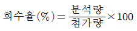
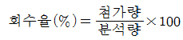
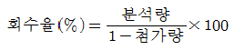
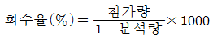
(정답률: 73%)
3과목: 작업환경관리
41. 유해한 작업환경에 대한 개선대책인 대치(substitution)의 내용과 가장 거리가 먼 것은?
- 공정의 변경
- 시설의 변경
- 작업자의 변경
- 물질의 변경
(정답률: 81%)
42. 일반적으로 작업장 신축 시 창의 면적은 바닥면적의 어느 정도가 적당한가?
- 1/2 ~ 1/3
- 1/3 ~ 1/4
- 1/5 ~ 1/7
- 1/7 ~ 1/9
(정답률: 66%)
43. 모 작업공정에서 발생되는 소음의 읍압수준이 110dB(A)이고 근로자는 귀덮개(NRR=17)를 착용하고 있다면 근로자에게 실제 노출되는 음압수준은?
- 90dB(A)
- 95dB(A)
- 100dB(A)
- 1⑤dB(A)
(정답률: 78%)
44. 공기 중에 발산된 분진입자는 중력에 의하여 침강하는데 stoke식이 많이 사용되고 있다. Stoke 종말침전속도 식으로 맞는 것은? (단, P1:먼지밀도 P:공기밀도 u:공기의 동점성계수 y(다시check):먼지직경, g:중력가속도)
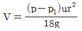
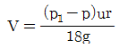
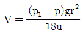
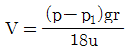
(정답률: 57%)
45. 방진마스크의 올바른 사용법이라 할수 없는 것은?
- 보관은 전용의 보관상자에 넣거나 깨끗한 비닐봉지에 넣는다.
- 면체의 손질은 중성세제로 닦아 말리고 고무부분은 햇빛에 잘 말려 사용한다.
- 필터의 수명은 환경상태나 보관정도에 따라 달라지나 통상 1개월 이내에 바꾸어 착용한다.
- 필터에 부착된 분진은 세게 털지 말고 가볍게 털어 준다.
(정답률: 71%)
46. 작업환경개선의 기본원칙 중 대치(substitution)의 관리 방법에 해당하지 않는 것은?
- 공정변경
- 작업위치변경
- 유해물질변경
- 시설변경
(정답률: 57%)
47. 가로15m, 세로 25m, 높이 3m인 어느 작업장의 음의 잔향시간을 측정해 보니 0.238sec였다. 이작업장의 총흡음력(sound absorption)을 51.6%로 증가시키면 잔향시간은 몇 sec가 되겠는가?
- 0.157
- 0.183
- 0.196
- 0.217
(정답률: 32%)
48. 작업장에서 발생된 분진에 대한 작업환경관리대책과 가장 거리가 먼 것은?
- 국소배기 장치의 설치
- 발생원의 밀폐
- 방독마스크의 지급 및 착용
- 전체환기
(정답률: 77%)
49. 작업호나경관리의 유해요인 중에서 물리학적요인과 가장 거리가 먼 것은?
- 분진
- 전리방사선
- 기온
- 조명
(정답률: 35%)
50. 전리방사선의 장애와 예방에 관한 설명으로 옳지 않은 것은?
- 방사선 노출수준을 거리에 반비례하여 증가하므로 발생원과의 거리를 관리하여야 한다.
- 방사선의 측정은 Geiger Muller counter 등을 사용하여 측정한다.
- 개인 근로자의 피폭량은 pocket dosimeter, film badge등을 이용하여 측정한다.
- 기준 초과의 가능성이 있는 경우에는 경보 장치를 설치한다.
(정답률: 66%)
51. 열증증 질환 중 열피로에 대한 설명으로 가장 거리가 먼 것은?
- 혈 중 염소농도는 정상이다.
- 체온은 정상범위를 유지한다.
- 말초혈관 확장에 따른 요구 증대만큼의 혈관운동 조절이나 심박출력의 증대가 없을 때 발생한다.
- 탈수로 인하여 혈장량이 급격히 증가할 때 발생한다.
(정답률: 53%)
52. 고압환경의 영향 중 2차적인 가압현상과 가장 거리가 먼 것은?
- 질소마취
- 산소중독
- 폐내 가스 팽창
- 이산화탄소 중독
(정답률: 80%)
53. 비중 5인 입자의 직경이 3um인 먼지가 다른 방해기류가 없이 층류이동을 할 때 50cm의 침강 챔버에 가라앉는 시간을 이론적으로 계산하면 얼마가 되는가?
- 약3분
- 약6분
- 약12분
- 약24분
(정답률: 48%)
54. 다음 조건에서 방독마스크의 사용 가능 시간은?(문제 오류로 조건 내용이 없습니다. 정확한 조건 내요을 아시는분 께서는 오류신고를 통하여 내용 작성 부탁 드립니다. 정답은 4번 입니다.)
- 110분
- 125분
- 145분
- 175분
(정답률: 63%)
55. 고열 장해인 열경련에 관한 서명으로 틀린 것은?
- 일반적으로 더운 환경에서 고된 육체적 작업을 하면서 땀으로 흘린 염분손실을 충당하지 못 할 때 발생하다.
- 염분을 공급할 때는 식염정제를 사용하여 빠른 공급이 될수 있도록 하여야 한다.
- 열경련 환자는 혈중 염분의 농도가 낮기 때문에 염분관리가 중요하다.
- 통증을 수반하는 경련은 주로 작업시 사용한 근육에서 흔히 발생한다.
(정답률: 68%)
56. 사람이 느끼는 최소 진동역치는?
- 55±5dB
- 65±5dB
- 75±5dB
- 85±5dB
(정답률: 84%)
57. 다음의 중금속 먼지 중 비중격 천공의 원인물질로 알려진 것은?
- 카드뮴
- 수은
- 크롬
- 니켈
(정답률: 80%)
58. 도노선(Dorno-ray)은 자외선의 대표적인 광선이다. 이 빛의 파장 범위로 가장 적절한 것은?
- 215~270nm
- 290~315nm
- 2150~2800nm
- 2900~3150nm
(정답률: 76%)
59. 산소가 결핍된 장소에서 자료 사용하는 호흡용보호구는?
- 방진마스크
- 일산화탄소용 방독마스크
- 산성가스용 방독마스크
- 호스마스크
(정답률: 81%)
60. 감압환경에서 감압에 따른 질소기포 형성량에 영향을 주는 요인과 가장 거리가 먼 것은?
- 감압속도
- 조직에 용해된 가스량
- 혈류내 변화시키는 상태
- 폐내 가스팽창
(정답률: 66%)
4과목: 산업환기
61. 다음 그림과 같이 단면적이 작은 쪽인 ㉠, 큰 쪽이 ㉡인 사각형 덕트의 확대관에 대한 압력손실을 구하는 방법으로 가장 적절한 것은? (단, 경사각은 θ1＞θ2이다.)
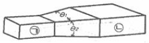
- θ1의 각도를 경사각으로 한 단면적을 이용한다.
- θ2의 각도를 경사각으로 한 단면적을 이용한다.
- 두 각도의 평균값을 이용한 단면적을 이용한다.
- 작은 쪽 (㉠)과 큰 쪽(㉡)의 등가 (상당) 직경을 이용한다.
(정답률: 72%)
62. 1mmH2O를 환산한 값으로 틀린 것은?
- 1kgf/m2
- 0.98N/m2
- 9.8Pa
- 0.0735mmHg
(정답률: 44%)
63. 다음 중 공기압력에 관한 설명으로 틀린 것은?
- 압력은 정압, 동압 및 전압 3가지로 구분된다.
- 전압은 단위 유체에 작용하는 정압과 동압의 총합이다.
- 동압을 때로는 저항 압력 또는 마찰압력 이라고도 한다.
- 동압은 정지상태의 공기를 일정한 속도로 흐르도록 가속화시키는데 필요한 압력을 말한다.
(정답률: 60%)
64. 공기정화장치의 입구와 출구의 정압이 동시에 감소되었다면 국소배기장치(설비)의 이상원인으로 가장 적절한 것은?
- 제진장치 내의 분진 최적
- 분지관과 후드 사이의 분진퇴적
- 분지관의 시험공과 후드 사이의 분진퇴적
- 송풍기의 능력저하 또는 송풍기와 덕트의 연결부위 풀림
(정답률: 75%)
65. 원형 덕트의 송풍량이 24m3/min이고, 반송 속도가 12m/s일때 필요한 덕트의 내경은 약 몇 m인가?
- 0.151
- 0.206
- 0.303
- 0.502
(정답률: 41%)
66. 다음 중 전체환기시설의 설치조건으로 적절하지 않은 것은?
- 오염물질의 독성이 매우 강한 경우
- 동일한 작업장에 오염원이 분산되어 있는 경우
- 오염물질의 발생량이 비교적 적은 경우
- 오염물질의 증기나 가스인 경우
(정답률: 83%)
67. 고농도의 분진이 발생되는 작업장에서는 후드로 유입된 공기가 공기정화장치로 유입되기 전에 입경과 비중이 큰 입자를 제거할 수 있도록 전처리 장치를 둔다. 전처리를 위한 집진기는 일반적으로 효율이 비교적 낮은 것을 사용하는데, 다음 중 전처리장치로 적합하지 않는 것은?
- 중력 집진기
- 원심력 집진기
- 관성력 집진기
- 여과 집진기
(정답률: 45%)
68. 온도가 150℃, 기압이 710mmHg인 상태에서 100m3의 공기는 온도 21℃, 기압 760mmHg인 상태에서 약 몇 m3으로 변하는가?
- 65
- 74
- 134
- 154
(정답률: 55%)
69. 다음 중 일반적으로 송풍기의 소요동력 (Kw)을 구하고자 할 때 관여되는 주요 인자로 볼수 없는 것은?
- 풍량
- 송풍기의 유효전압
- 송풍기의 효율
- 송풍기의 종류
(정답률: 71%)
70. 작업장의 크기가 12m×22m×45m 인 곳에서 톨루엔 농도가 400ppm이다. 이 작업장으로 600m3/min의 공기가 유입되고 있다면 톨루엔 농도를 100ppm까지 낮추는데 필요한 환기시간은 약 얼마인가? (단, 공기와 톨루엔은 완전 혼합된다고 가정 한다.)
- 27.45분
- 31.44분
- 35.45분
- 39.44분
(정답률: 35%)
71. 다음 중 송풍기에 관한 설명으로 틀린 것은?
- 평판송풍기는 타 송풍기에 비하여 효율이 낮아 미분탄, 톱밥 등을 비롯한 고농도 분진이나 마모성이 강한 분진의 이송용으로는 적당하지 않다.
- 원심송풍기로는 다익팬, 레이디얼팬, 터보팬 등이 해당된다.
- 터보형 송풍기는 압력 변동이 있어서 풍량의 변화가 비교적 작다.
- 다익형 송풍기는 구조상 고속회전이 어렵고, 큰 동력의 용도에서 적합하지 않다.
(정답률: 48%)
72. 접착제를 사용하는 A공정에서는 메틸에틸케톤(MEK)과 톨루엔이 발생, 공기 중으로 완전 혼합된다. 두 물질은 모두 마취작용을 나타내므로 상가효과가 있다고 판단되며, 각 물질의 사용정보가 다음과 같을 떄 필요한환기량(m3/min)은 약 얼마 인가? (단, 주위는 25℃, 1기압 상태이다.)
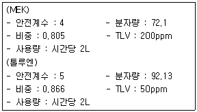
- 181.9
- 557.0
- 764.5
- 946.4
(정답률: 40%)
73. 그림과 같이 Q1과 Q2에서 유입된 기류가 합류관인 Q3로 흘러갈 때, Q3의 유량(m3/min)은 약 얼마인가? (단, 합류와 확대에 의한 압력손실은 무시한다.)
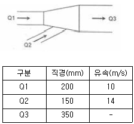
- 33.7
- 36.3
- 38.5
- 40.2
(정답률: 48%)
74. 국소배기장치 검사에 공기의 유속을 측정할 수 있는 유속계 중 가장 많이 쓰이는 것은?(오류 신고가 접수된 문제입니다. 반드시 정답과 해설을 확인하시기 바랍니다.)
- 그네 날개형
- 회전 날개형
- 열선 풍속계
- 연기 발생기
(정답률: 44%)
75. 다음 중 필요환기량을 감소시키기 위한 후드의 선택 지침으로 적합하지 않는 것은?
- 가급적이면 공정을 많이 포위한다.
- 포집형 후드는 가급적 배출 오염원 가까이에 설치한다.
- 후드 개구면의 속도는 빠를수록 효율적이다.
- 후드 개구면에서 기류가 균일하게 분포되도록 설계한다.
(정답률: 68%)
76. 다음 중 제어속도에 관한 설명으로 옳은 것은?
- 제어속도가 높을수록 경제적이다.
- 제어속도를 증가시키기 위해서 송풍기 용량의 증가는 불가피하다.
- 외부식 후드에서 후드와 작업지점과의 거리를 줄이면 제어속도가 증가한다.
- 유해물질을 실내의 공기 중으로 분산시키지 않고 후드 내로 흡인하는데 필요한 최대기류 속도를 말한다.
(정답률: 41%)
77. 후드의 유입손실계수가 0.8, 덕트 내의 공기흐름속도가 20m/s 일 때 후드의 유입압력손실은 약 몇 mmH2O인가? (단, 공기의 비중량은 1.2Kgf/m3이다.)
- 14
- 6
- 20
- 24
(정답률: 38%)
78. 전자부품을 납땜하는 공정에 외부식 국소배기 장치를 설치하려 한다. 후드의 규격은 가로세로 각각 400mm 이고, 제어거리는 20cm, 제어속도는 0.5m/s, 반응속도를 1200m/min으로 하고자 할 때 필요소요풍량(m3/min)은 약 얼마인가? (단, 플랜지는 없으며 공간에 설치한다.)
- 13.2
- 15.6
- 16.8
- 18.4
(정답률: 48%)
79. 90°곡관의 곡류반경이 2.0일떄 압력손실 계수는 0.27이다. 속도압이 15mmH2일때 덕트 내 유속은 약 몇 m/s인가? (단, 표준상태이며, 공기의 밀도는 1.2kg/m3이다.)
- 20.7
- 15.7
- 18.7
- 28.7
(정답률: 37%)
80. 복합환기시설의 합류점에서 각 분지관의 정압차가 5~20%일 때 정압평형이 유지되도록 하는 방법으로 가장 적절한 것은?
- 압력손실이 적은 분지관의 유량을 증가시킨다.
- 압력손실이 적은 분지관의 직경을 작게 한다.
- 압력손실이 많은 분지관의 유량을 증가시킨다.
- 압력손실이 많은 분지관의 직경을 작게 한다.
(정답률: 42%)